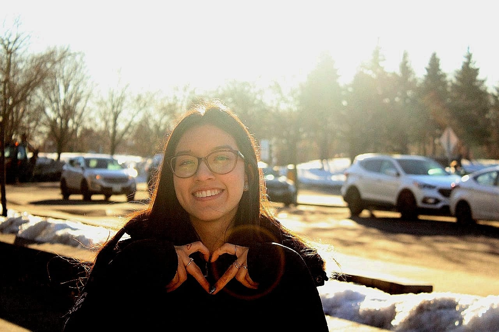

My name is Lucia and I am peruvian. My birthay is coming and I am very excited about it. I would like to eat Peruvian food that day. I moved to Canada to study Interactive Media Desing in Algonquin College. I like being here; however, the weather is extreme. I guess I will get use to that in some weeks. If there is something I love about being in Canada is living with my auntie and cousins. They are good people and make me feel at home. They even let me give them hugs every time I want.
So far I like my program; however, my dream is working with children. In the future I would like to study something realeted with childcare . Although I like children, I do not want to be a mother but maybe in ten years I will change my mind. I am a really positive person and I think every problem has a solutin except for death.
All our dreams can come true, if we have the courage to persue them. -Walt Disney
My hobbies
- Listening to music
- Watching movies
- reading
- writting
- talking with new people